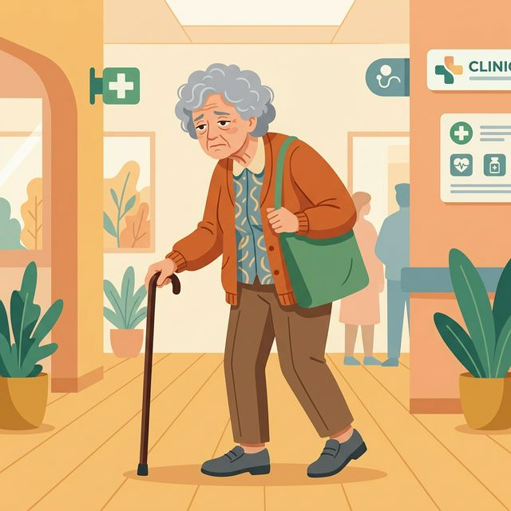

左右滑动卡片，完成 4 个侦探任务 👉

案例一：王爷爷的“腿软”危机
“我最近总是感觉腿脚发软...坐在比较矮的沙发上，如果不扶东西、不让人拉一把，我根本站不起来。感觉大腿前侧很空，使不上劲。” —— 76岁 王爷爷
🔍
侦探洞察：
- 起立困难说明下肢大肌群（抗重力肌）出现严重退化。
- 大腿前侧的 股四头肌 和臀部 臀大肌 严重萎缩，无法提供有效的向心收缩力量。
- 这是引发致命跌倒的极高危信号。

案例二：张奶奶的“虚胖”秘密
“别人看我腿也不细啊，怎么干点活就累？刚才连广口瓶盖都打不开了，拧毛巾也拧不干水，感觉老了真没用了。” —— 72岁 张奶奶
🔬
肌少症微观变化：
- 脂肪浸润： 肌肉纤维间隙充斥大量脂肪（类似大理石花纹），导致腿看起来粗，但发力单位变少。
- 快缩肌纤维流失： 负责爆发收缩的快缩肌纤维优先流失，导致动作迟缓（握力急剧下降），极易跌倒。
15题大闯关 🎯
0 / 15